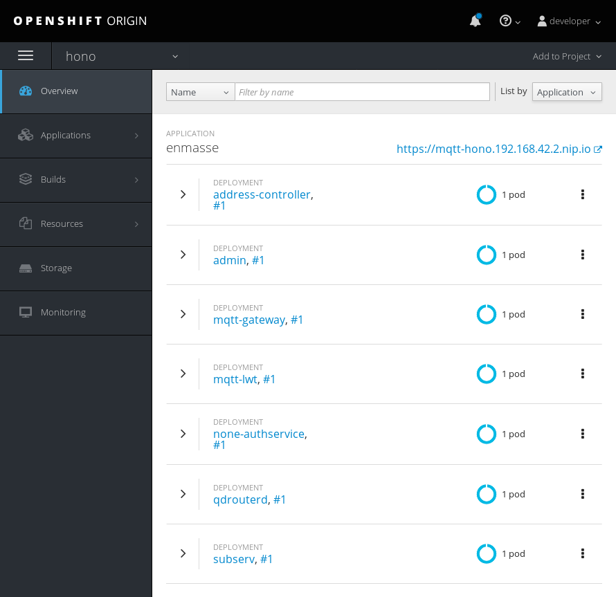

OpenShift with EnMasse
This guide describes how to deploy Eclipse Hono™ using EnMasse as messaging backend on a single-master/single-node local OpenShift installation using “minishift”.
All the Eclipse Hono™ components can be deployed on OpenShift, thanks to the resources YAML files that are provided through the repository. These files describe such components in terms of deployments and services in order to have the right pods running in the OpenShift cluster so that they are able to communicate with each other.
Use for demos only
The intention of this deployment example is to provide a very simple to replicate setup of Hono based on OpenShift. It is mostly suitable for developing, testing and demo purposes. For full production usage, you’ll need to consider the following topics which are not covered by this example deployment:
- Running EnMasse with full authentication enabled
- Integration between EnMasse and Hono authentication
- Configuring and supporting multi-tenancy in both platforms
These are all subjects to current and future developments in this area. This document will be updated accordingly with the progress.
Prerequisites
The main prerequisite for this kind of deployment is to have an available OpenShift cluster. For local development purposes it is pretty simple to start up such a cluster using “minishift”. It will run a single node/single master OpenShift cluster inside a virtual machine on your local computer.
You should have the following tools installed on your local system:
- OpenShift Origin client tools, 3.7.x+ – required to communicate with the OpenShift cluster
- Minishift, 1.13.x+ – required to run local OpenShift cluster
- Bash – required to execute setup scripts
In case you want to use an existing OpenShift cluster you only need the the “client tools” don’t need to install “minishift”.
OpenShift Origin client tools
The client tools can be downloaded from the OpenShift Origin project repository. Simply download the archive, unpack it and drop it into a directory where it can be found by the local PATH lookup.
Minishift
Minishift is a tool that helps you run OpenShift locally by running a single-node OpenShift cluster inside a VM. Follow this guide for installing and having Minishift up and running.
OpenShift limits the number of pods you can start by the number of system resources available. Minishift will only provide a small subset of your host machine resources by default. However this is too limited for a Hono deployment and so the following start command has to be used in order to provide enough resources to the Minishift instance:
$ minishift start --cpus 4 --memory 8GB --disk-size 40GB
Resource limits
Once you created your Minishift cluster instance with minishift start the
resource arguments (like --cpus) are ignored in future calls to
minishift start as the virtual machine has already been created. You will
need to destroy the instance using minishift delete before it will accept
the new resource limits.
After Minishift has been started up, the following steps need to be performed:
Set the
DOCKER_HOSTenvironment variable to point to the Docker daemon running inside the Minishift VM and set path to the OpenShift command line utilities$ eval $(minishift docker-env) $ eval $(minishift oc-env)Build the Hono Docker images and deploy them to the Docker registry in the Minishift instance
~/hono$ mvn clean install -Pbuild-docker-image
Those two steps will run a Hono build on your local machine and assemble the docker images on the Docker registry running inside the Minishift instance.
Create a new project
In this setup everything will be deployed into a single OpenShift project. We do need to create this project before executing the next steps. A new project can be created by executing the following command from the command line:
$ oc new-project hono
Project name
This tutorial and all scripts assume that the project name will be hono. If
you choose a different name, you will need to adapt commands and shell scripts
accordingly. It is strongly recommended to stick to the default name hono.
Deploy EnMasse
This deployment will use EnMasse as its messaging backend. So the first thing
we need is to run EnMasse messaging platform on OpenShift in a project
called hono. For that, download the EnMasse release from the
download page.
These instructions were tested using version 0.20.0. Newer versions might
work as well, but are not tested. Extract the EnMasse release and execute
the following command from the newly created directory:
./deploy.sh -n hono -m https://$(minishift ip):8443
This should get the installation of EnMasse running. For more information on how to run and configure EnMasse, take a look at the EnMasse documentation.
Be patient
The deployment of EnMasse will pull a few docker images during the startup process. It is recommended to wait until all 7 pods are running and OK.
When the EnMasse deployment is complete, the Minishift dashboard of the hono
project should look something like this:

Script based Deployment
Now we are ready to deploy Hono. From the
example/target/deploy/openshift directory, run:
~hono/example/target/deploy/openshift$ bash ./openshift_deploy.sh
This should start all necessary Hono components, configured to connect to the EnMasse instance running in the same project.
The script will try to use Minishift cluster address by default. If you wish to deploy Hono to some other OpenShift cluster, you must specify the address of the cluster as an argument, like:
~hono/example/target/deploy/openshift$ bash ./openshift_deploy.sh https://192.168.64.3:8443
In order to see the deployed components, you can launch OpenShift’s web UI in a browser by issuing:
$ minishift dashboard
You can login with username developer and password developer. Be sure
to switch to the Eclipse Hono project in the UI in order to see the
components deployed as part of Hono.
The screenshots below show Hono’s components deployed to OpenShift:
Hono dashbaord in OpenShift
Undeploying Hono
There also is a script for shutting down and undeploying Hono:
~hono/example/target/deploy/openshift$ bash ./openshift_undeploy.sh
Be patient
Undeploying the project will take a short moment. If you try to re-created the
hono project before the cleanup is complete you will receive an error that
the project hono cannot be created because it already (still) exists.
Extract Certificate
In order to connect the external consumer to EnMasse, we need to use a
proper SSL certificate. We can extract one from the OpenShift using the
following command (from the example directory):
~hono/example$ oc extract secret/external-certs-messaging --to=target/config/hono-demo-certs-jar/ -n hono
This will create two new files with the key and certificate which we will use to connect the Hono consumer.
Access to Hono services
The OpenShift deployment provides access to Eclipse Hono by means of services, the main ones are:
- messaging: router network for the business application in order to consume data
- hono-adapter-mqtt-vertx: protocol adapter for publishing telemetry data and events using the MQTT protocol
- hono-adapter-http-vertx: protocol adapter for publishing telemetry data and events using the HTTP protocol
- hono-service-device-registry: component for registering and managing devices
You can check these services through the oc get services command having the following output :
NAME CLUSTER-IP EXTERNAL-IP PORT(S) AGE
address-controller 172.30.40.104 <none> 8080/TCP,8081/TCP,5672/TCP 2h
configuration 172.30.28.244 <none> 5671/TCP 2h
console 172.30.104.176 <none> 5672/TCP,8080/TCP 2h
grafana 172.30.206.225 <none> 3000/TCP 2h
hono-adapter-http-vertx 172.30.206.33 <nodes> 8080:30080/TCP,8443:30443/TCP 2h
hono-adapter-kura 172.30.119.55 <nodes> 1883:31884/TCP,8883:30884/TCP 2h
hono-adapter-mqtt-vertx 172.30.33.184 <nodes> 1883:31883/TCP,8883:30883/TCP 2h
hono-service-auth 172.30.25.62 <none> 5671/TCP 2h
hono-service-device-registry 172.30.219.76 <nodes> 5671:31671/TCP,8080:31080/TCP,8443:31443/TCP 2h
hono-service-messaging 172.30.60.68 <nodes> 5671:32671/TCP 2h
influxdb 172.30.234.72 <none> 2003/TCP,8083/TCP,8086/TCP 2h
messaging 172.30.86.158 <none> 5672/TCP,5671/TCP,55671/TCP,56671/TCP,55672/TCP 2h
mqtt 172.30.29.31 <none> 1883/TCP,8883/TCP 2h
none-authservice 172.30.202.44 <none> 5671/TCP 2h
queue-scheduler 172.30.196.224 <none> 5672/TCP 2h
ragent 172.30.182.52 <none> 5671/TCP 2h
subscription 172.30.91.190 <none> 5672/TCP 2h
Services are accessed from the “outside” of OpenShift using “routes”, which
map external traffic to internal services. You can get a list of all routes
from the project by executing oc get routes, which should give you the
following output:
NAME HOST/PORT PATH SERVICES PORT TERMINATION WILDCARD
console console-hono.192.168.42.2.nip.io console http None
grafana grafana-hono.192.168.42.2.nip.io grafana 3000-tcp None
hono-adapter-http-vertx hono-adapter-http-vertx-hono.192.168.42.2.nip.io hono-adapter-http-vertx 8080 None
hono-adapter-http-vertx-sec hono-adapter-http-vertx-sec-hono.192.168.42.2.nip.io hono-adapter-http-vertx 8443 passthrough None
hono-adapter-kura hono-adapter-kura-hono.192.168.42.2.nip.io hono-adapter-kura 1883 None
hono-adapter-kura-sec hono-adapter-kura-sec-hono.192.168.42.2.nip.io hono-adapter-kura 8883 passthrough None
hono-adapter-mqtt-vertx hono-adapter-mqtt-vertx-hono.192.168.42.2.nip.io hono-adapter-mqtt-vertx 1883 None
hono-adapter-mqtt-vertx-sec hono-adapter-mqtt-vertx-sec-hono.192.168.42.2.nip.io hono-adapter-mqtt-vertx 8883 passthrough None
hono-service-auth hono-service-auth-hono.192.168.42.2.nip.io hono-service-auth 5671 passthrough None
hono-service-device-registry-amqps hono-service-device-registry-amqps-hono.192.168.42.2.nip.io hono-service-device-registry 5671 passthrough None
hono-service-device-registry-http hono-service-device-registry-http-hono.192.168.42.2.nip.io hono-service-device-registry 8080 None
hono-service-device-registry-https hono-service-device-registry-https-hono.192.168.42.2.nip.io hono-service-device-registry 8443 passthrough None
hono-service-messaging hono-service-messaging-hono.192.168.42.2.nip.io hono-service-messaging 5671 passthrough None
messaging messaging-hono.192.168.42.2.nip.io messaging amqps passthrough None
mqtt mqtt-hono.192.168.42.2.nip.io mqtt secure-mqtt passthrough None
restapi restapi-hono.192.168.42.2.nip.io /v1 address-controller http None
In the following sections, when using a hostname, we will be using the hostnames as provided by the “get routes” command above. Using Minishift or a real OpenShift cluster, it works the same way.
Starting a Consumer
As described in the Getting Started
guide, data produced by devices is usually consumed by downstream applications
which connect directly to the router network service. You can start the client
from the example folder as follows:
~hono/example$ mvn spring-boot:run -Drun.arguments=--hono.client.host=$(oc get route messaging --template='{{.spec.host}}'),--hono.client.port=443,--hono.client.trustStorePath=target/config/hono-demo-certs-jar/tls.crt
Uploading Telemetry with HTTP
In order to upload telemetry data to Hono, the device needs to be registered
with the system. You can register the device using the Device Registry by
running the following command (i.e. for a device with ID 4711):
$ curl -X POST -i -H 'Content-Type: application/json' -d '{"device-id": "4711"}' http://$(oc get route hono-service-device-registry-http --template='{{.spec.host}}')/registration/DEFAULT_TENANT
After having the device registered, uploading telemetry is just a simple HTTP POST command to the HTTP Adapter:
$ curl -X POST -i -u sensor1@DEFAULT_TENANT:hono-secret -H 'Content-Type: application/json' --data-binary '{"temp": 5}' http://$(oc get route hono-adapter-http-vertx --template='{{.spec.host}}')/telemetry
503 Service unavailable
You might run into the issue that the previous HTTP POST operation returns
503 Service Unavailable. In this case the HTTP protocol adapter has no
“credit”, meaning it has no downstream consumer which would accept the message.
This will be the case when you have no consumer running. So before uploading telemetry data you need to ensure that at least one consumer is running as described in Starting a consumer.
Uploading Telemetry with MQTT
Other than using the HTTP Adapter, it’s possible to upload telemetry data using the MQTT Adapter as well:
$ mosquitto_pub -h $(minishift ip) -p 31883 -u 'sensor1@DEFAULT_TENANT' -P hono-secret -t telemetry -m '{"temp": 5}'
Mosquitto TLS SNI support
As of writing Mosquitto (which provides the mosquitto_pub) command doesn’t
support TLS SNI, which is however required when using MQTT with OpenShift
routes. The workaround is to use the “Node port” as in the example above.
Other MQTT clients do not have this limitations so using TLS with SNI should be preferred in this case.
Usernames & passwords
The username and password used above for device 4711 are part of the example
configuration that comes with Hono.
See Device Identity for an
explanation of how devices are identified in Hono and how device identity is
related to authentication.